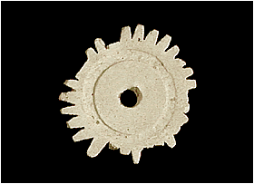

|
It was afternoon before the boy and his father had finished at the market. The boy's father was satisfied with the day's work and he smiled as they walked through the middle town back to their home. As the sun faded in the sky, the boy imagined the time when beads that he made would begin the long journey to far-away lands, tucked safely into the folds of a trader's cloth. 
| |
| ...previous | |